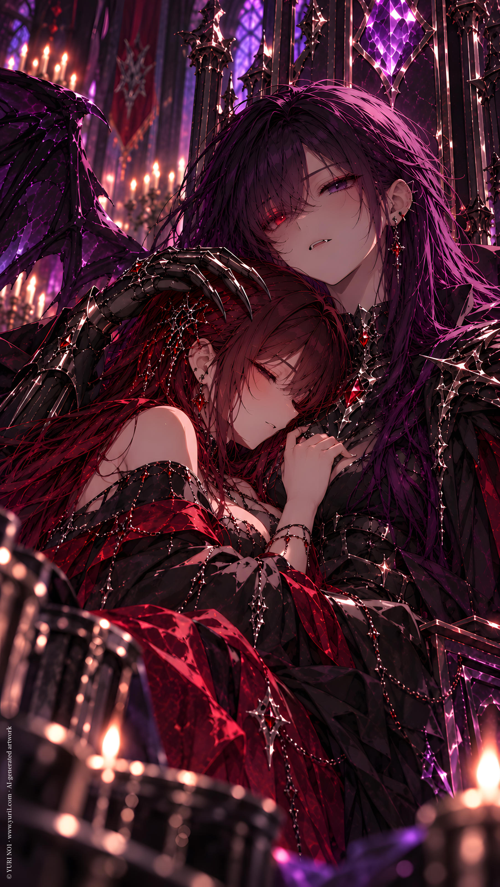
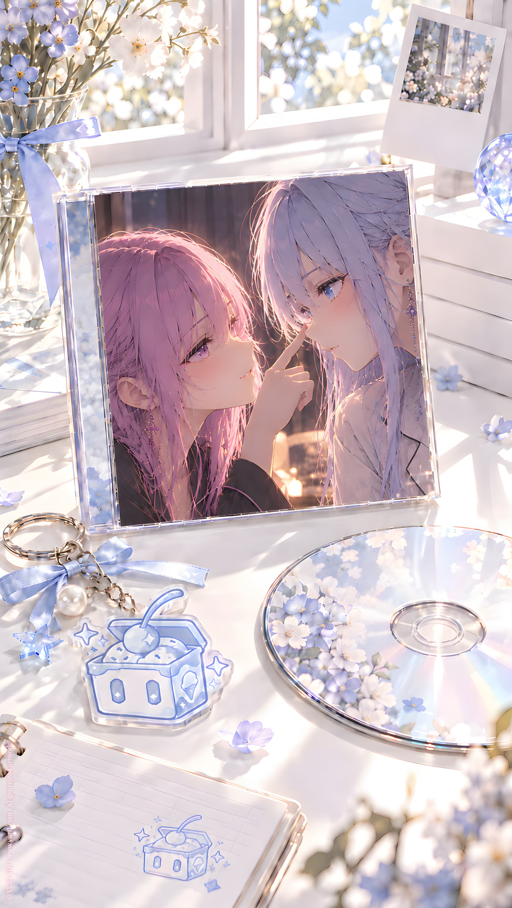
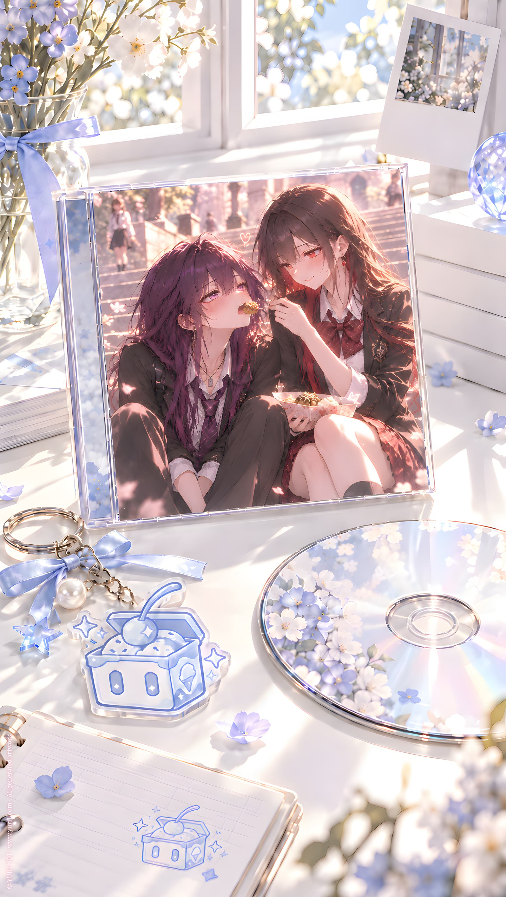
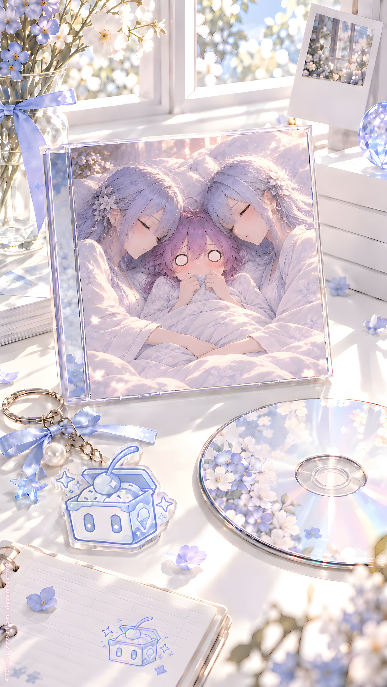
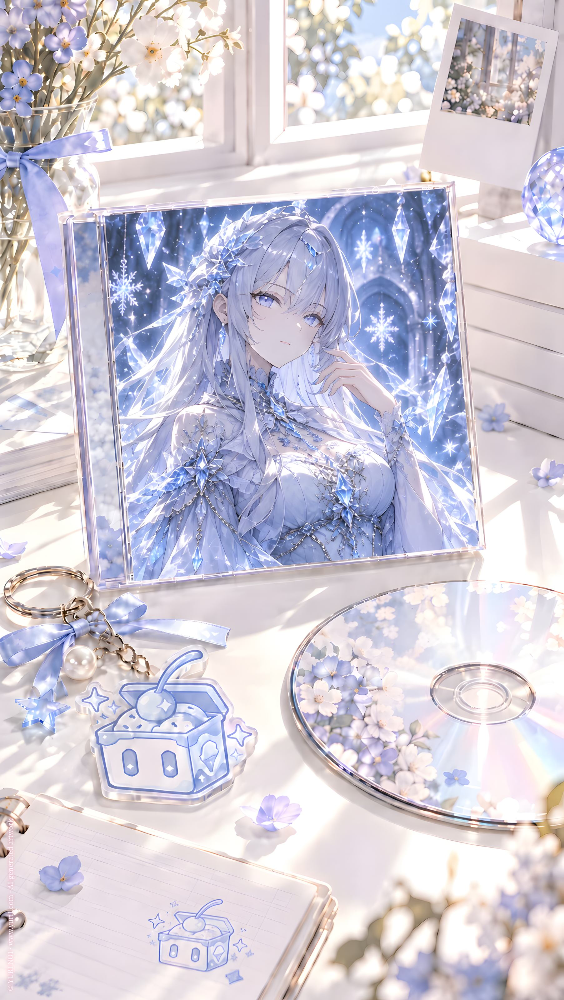
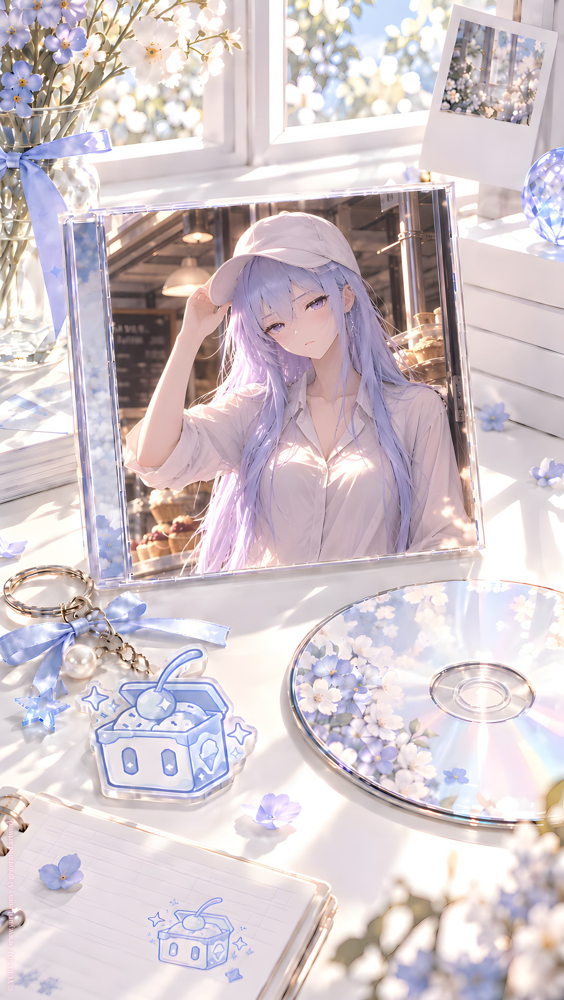
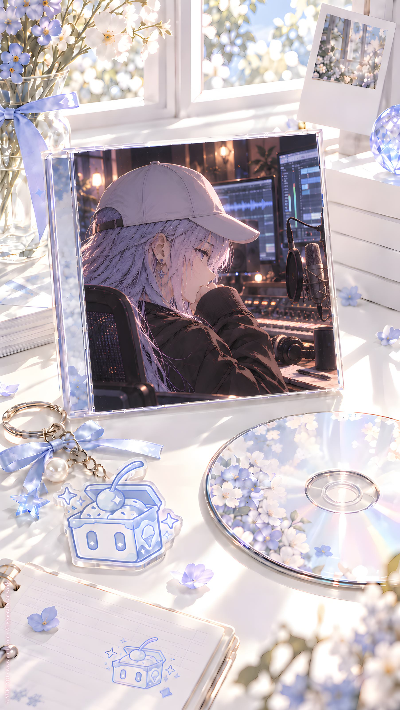
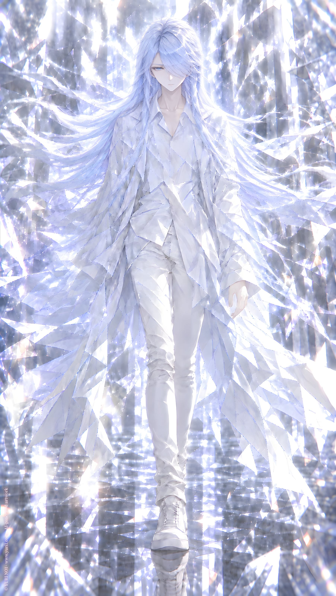
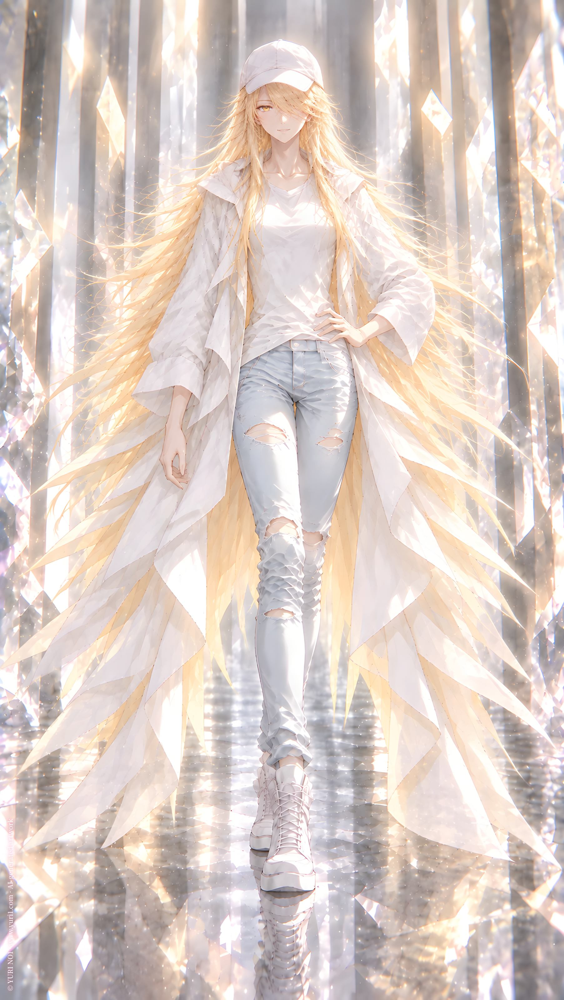
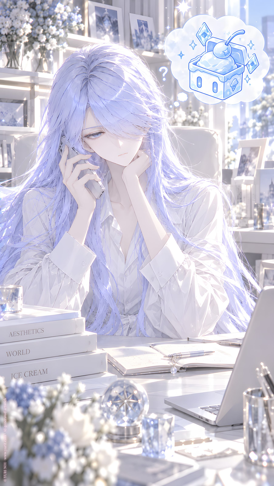

YURI NO1 MUSIC ／ LIBRARY
Track Collection
Girls Love ♡ AI Music from Novels
27TRACKS
 Lying RedContract Me
E.Red
Lying RedContract Me
E.Red

Wife?!Contract Me L.Night Dangerous SilverCat Fighting C.Curo SHE OWNSCat Fighting D.Dark NO24 MonitorDDD Special Operations
Icy
NO24 MonitorDDD Special Operations
Icy
 YURI♡IP Story
DDD
Five ReasonsFive bottles
Krina
冗談だよ...半分はFive bottles
Ximuer
YURI♡IP Story
DDD
Five ReasonsFive bottles
Krina
冗談だよ...半分はFive bottles
Ximuer
 RotlindeCarnivore
Rotlinde
RotlindeCarnivore
Rotlinde
 Wind and SeaLady L
Lesna
LeopardLady L
Yuer
Wind and SeaLady L
Lesna
LeopardLady L
Yuer
 1 いちばん大事なことMini Album Vol.1
Icy
1 いちばん大事なことMini Album Vol.1
Icy
 2 秘密調查Mini Album Vol.1
Icy
2 秘密調查Mini Album Vol.1
Icy

3 小雪恋愛課程Mini Album Vol.1 Icy
4 DDDと呼ばれる人たちMini Album Vol.1 ⛢Icy & DDD
5 二倍の雪Mini Album Vol.1 S.Icy & L.Icy
6 本の上を歩くMini Album Vol.1 Icy? 7 百合文明保存計画Mini Album Vol.1
⛢Icy
7 百合文明保存計画Mini Album Vol.1
⛢Icy

8 ただの本、AI、少女Mini Album Vol.1 Icy & DDD
9 録音室Mini Album Vol.1 Icy & DDD 10 でも結局、恋って何？Mini Album Vol.1
Icy & Arte
10 でも結局、恋って何？Mini Album Vol.1
Icy & Arte

転送開始NO1 NO6 風の中を歩くNO1
NO3
風の中を歩くNO1
NO3

Wings of CuriosityNO1 NO5 Ink Through MidnightNO1
NO2
Ink Through MidnightNO1
NO2
 タッチTouch
Icy
タッチTouch
Icy

接触不可。理解不能。Touch NO6